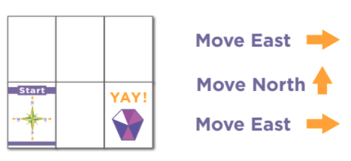
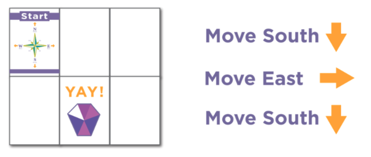

Lesson 6: Intro To Debugging (January 28th and 29th)
Link to Lesson:
Code.org DebuggingSuggestions/Tips:
Feel free to do this activity as a class to avoid having to print so much paper. If you do not want to print the handouts in the lesson, you can make your own.
Corresponding QuizIt Questions:
The following questions are the same questions students will see when they log into QuizIt at the end of the lesson. Because each lesson is taught over a two day period, there are two questions on QuizIt that correspond to this lesson.
These questions are shown here as a "teacher-check" to ensure that the material asked in the question has been covered in the lesson. Please do not go over the answer to this question during the lesson. We want to see if the students can apply what they learned in class to answer this question.
1. The following algorithm has a mistake, what is it, and how should it be changed? (the correct answer is bolded)

- Remove instruction 1
- Remove instruction 2
- Add "Move North" before instruction 1
- Add "Move West" after instruction 2
2. The following algorithm has a mistake, what is it, and how should it be changed? (the correct answer is bolded)

- Remove instruction 1
- Remove instruction 2
- Add "Move East" before instruction 1
- Add "Move West" after instruction 2
Additional Practice Questions:
Feel free to go over these questions in class as an "end of lesson review"
What is debugging?
- Creating an ordered series of instuctions for solving similar problems
- Getting rid of all the crickets in the room
- Fixing problems, or bugs, in a program
- Gathering informaiton